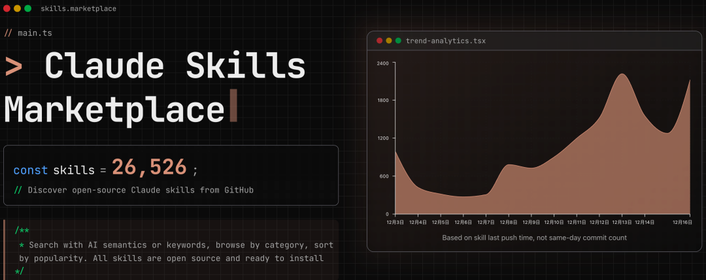
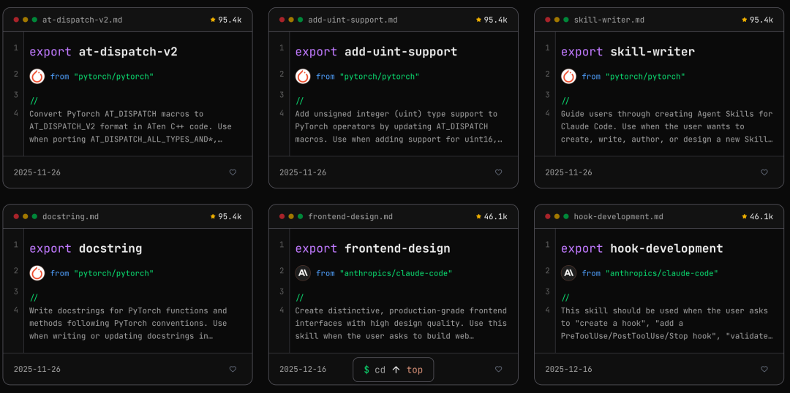
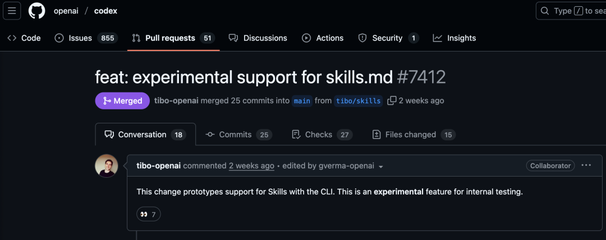
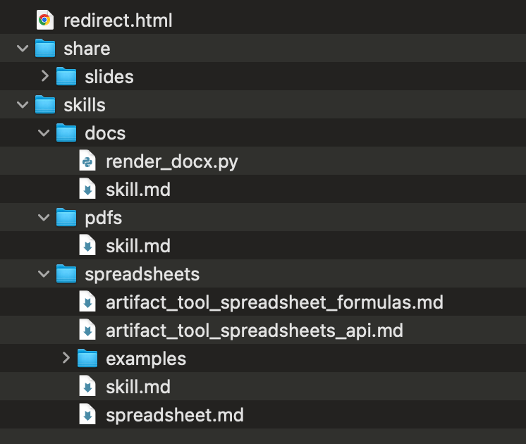

量变引起质变。最好最快的学习方式就是模仿。
Skills 的热度不减，ChatGPT 和 CodeX 现在也都支持了 SKILL.md。估计很快，Skill 就会像 MCP 一样，获得各个大模型的“内置支持”，成为 Agent 能力的一部分。
关于 Skill 的介绍，已经有很多文章了，我之前也写过两篇。这次主要是分享 十几个自己收集的优质 Skills 资源库，涵盖文档处理、开发工具、创意设计等全场景应用。目的就是偷师学艺。
Claude 官方是有个插件市场的，官方的 Plugin、Skills、SubAgent 等都可以通过插件市场的形式安装，但是内容比较少，不够吃啊。
Skills 聚合网站
现在大家都细化可视化，那就首推几个 Skills 的可搜索网站，内容多、更新快、有分类：
https://skillsmp.com/ https://www.aitmpl.com/skills https://claudemarketplaces.com/
 |  |
开源仓库
这里有各种各样形形色色的 Skill，也是上面的网站的源泉，可以直接追踪仓库的更新记录，学习他们的迭代。
1. 官方出品
anthropics/skills
地址：
https://github.com/anthropics/skills
这是 Anthropic 官方维护的 Skills 示例库，也是学习 Skills 开发的最佳教材。
核心亮点:
- 文档处理四大件
- Word/PDF/PPT/Excel 完整支持,包括创建、编辑、分析等高级功能 - 开发者工具
- MCP 服务器构建、Web 应用测试、Artifacts 创建 - 创意设计
- 算法艺术生成、Canvas 设计、主题工厂
特别值得一提的是，官方将 Claude.ai 中文档创建功能背后的真实 Skills 开源了！这些都是经过生产环境验证的高质量实现，非常适合作为参考。
具体的安装，可以使用官方的应用市场安装，也可以直接到 Github 仓库里下载。
ChatGPT/Skills
地址：
https://github.com/eliasjudin/oai-skills
X 上疯传的 /home/oai 打包，其实恰好暴露了一个趋势：只要产品有“可读写文件系统 + 可执行环境”，Skills 这种机制就几乎是必然会出现的“prompt 工程化形态”。OpenAI 的 Skills 支持同时出现在 ChatGPT（容器环境里有 /home/oai/skills）和开源 Codex CLI 里。
 |  |
2. 民间开源
这里收集的是 Github 上的 500+ 的 star 量的仓库，算是最优质的资源了，当然会有部分仓库是有重叠的，可以参考学习和使用。
https://github.com/obra/superpowers/tree/main/skills
https://github.com/ComposioHQ/awesome-claude-skills
https://github.com/BehiSecc/awesome-claude-skills
https://github.com/VoltAgent/awesome-claude-skills
https://github.com/travisvn/awesome-claude-skills
https://github.com/mrgoonie/claudekit-skills/tree/main/.claude/skills
https://github.com/K-Dense-AI/claude-scientific-skills
https://github.com/bear2u/my-skills/tree/master/skills
https://github.com/czlonkowski/n8n-skills
https://github.com/huggingface/skills
https://github.com/yusufkaraaslan/Skill_Seekers
这些仓库主要分九大分类体系:
文档处理 - EPUB 转换、Markdown 处理 开发工具 - AWS CDK、D3.js 可视化、iOS 模拟器 数据分析 - CSV 智能分析、根因追溯 商业营销 - 竞品广告分析、域名创意生成 沟通写作 - 会议洞察分析、内容研究助手 创意媒体 - 视频下载、GIF 创建 效率组织 - 发票整理、文件智能归档 协作管理 - Git 自动化、代码审查 安全系统 - 威胁猎杀、数字取证
如何选择
- 开发者:
anthropics/skills + obra/superpowers - 内容创作者:
ComposioHQ(Content Research Writer、Theme Factory) - 数据分析师:
ComposioHQ(CSV Data Summarizer、Meeting Insights) - 设计师:
anthropics/skills(Canvas Design、Brand Guidelines)
如何写
推荐先安装官方的 skill-creator 的元 Skill：
https://github.com/anthropics/skills/tree/main/skills/skill-creator。
然后在会话中，告诉 AI 自己要创建一个什么样的 Skill，它会自自动调用skill-creator 来和你一起创建一个初稿出来。
但是，但是，不要把初稿当成终稿，要自己多调试、测试使用效果，把效果再反馈给 AI，让他帮忙迭代优化 Skill。
当然，开源的、别人的 Skill 自己使用也是一样的方式，不是说拿来就用的，要进行自己的验证和调整，毕竟每个人、每个人业务、每个场景关注的点和侧重是不一样的，没有说“百搭的”。
人机合一，质量和输出是我们始终要自己把控的，否则那只是平均概率下的普通效果。